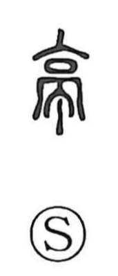

亭

Uncategorized
Kun: yado, azumaya | On: tei, chin
pavilion ・ posting station ・ relay station ・ inn ・ watchtower ・ arbor
Explanation
Originally a pictograph of a tall building with an arched gateway, sometimes drawn with a lookout set on the roof, 亭 named a structure that combined lodging with a watch post. In the Han period, such 亭 were installed at fixed intervals of ten li as official waystations, which is why the character came to mean a posting or relay station, an inn, or a watchtower. In later usage it also referred to the simple roofed garden pavilion or arbor where people rest and take in the view.